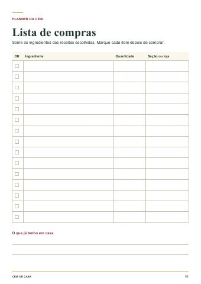
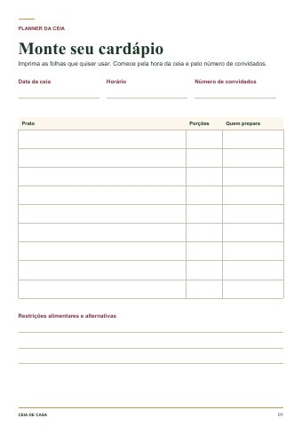
Planner da Ceia
Três folhas A4 para montar seu cardápio, planejar as porções, organizar as compras e dividir as tarefas até a hora de servir.
E-book de receitas de Natal
Dez receitas, um cardápio para seis e um plano para chegar à hora da ceia com a sobremesa pronta e o assado descansando.
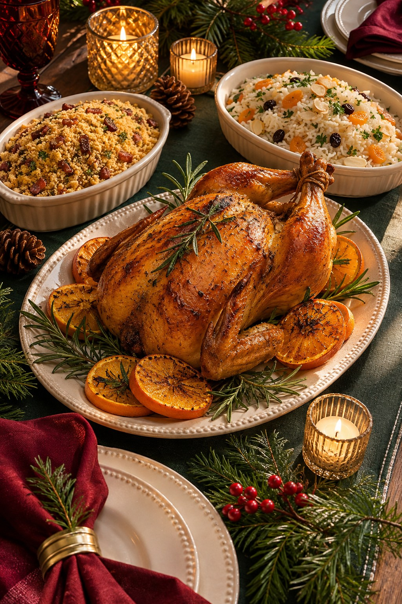
O cardápio para seis
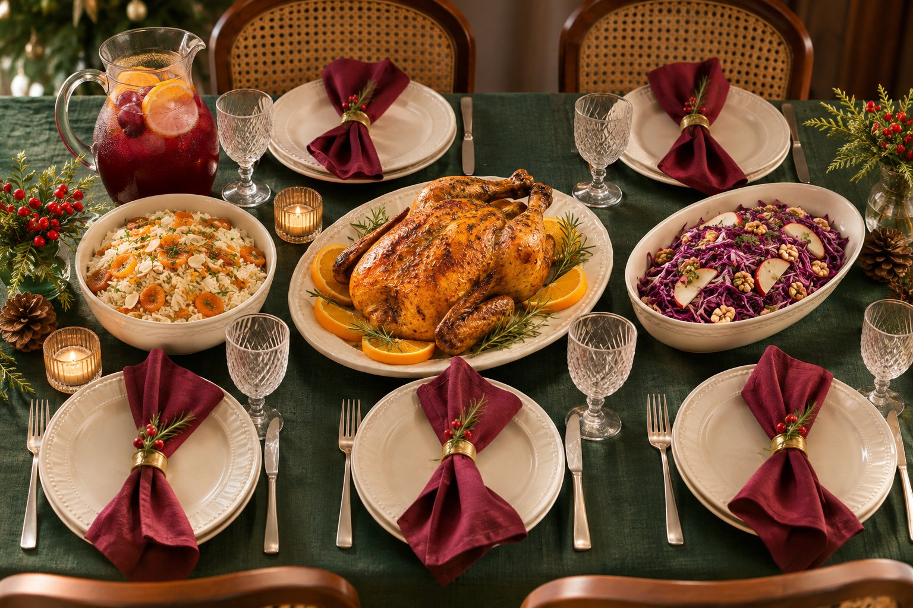
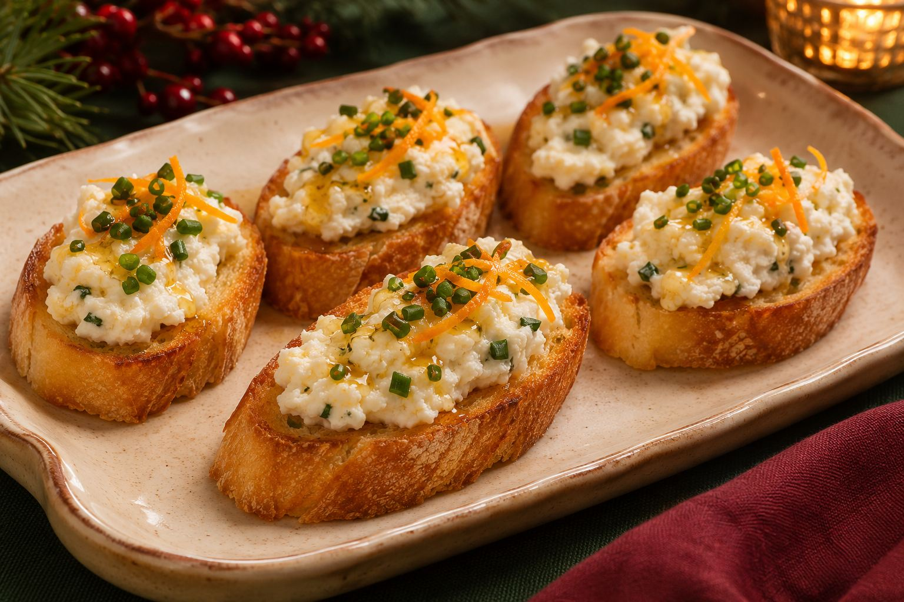
Entrada
Torradas crocantes com creme de ricota, raspas de laranja e mel.
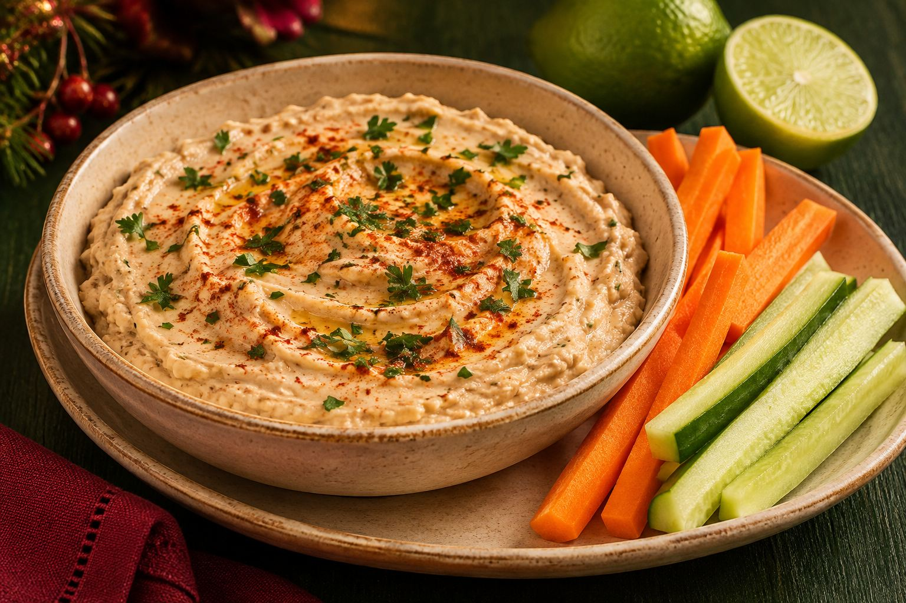
Entrada
Patê cremoso com páprica defumada, cenoura e pepino em palitos.
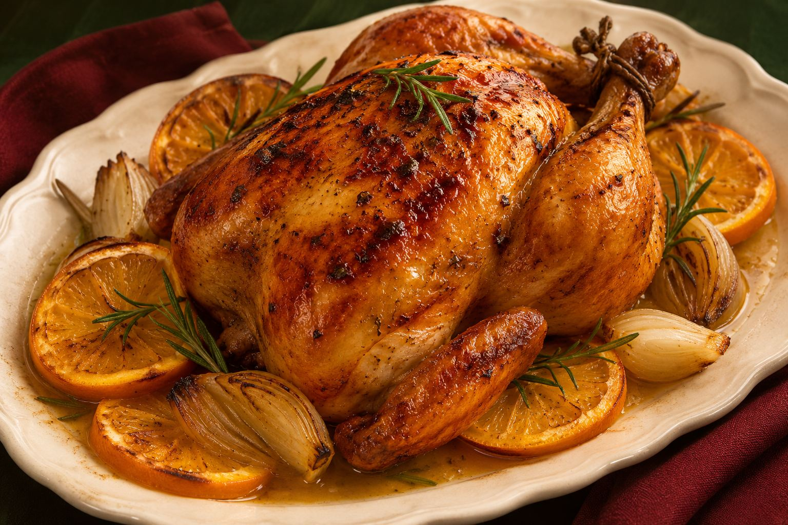
Prato principal
Frango inteiro dourado com cebolas assadas e caldo de laranja.
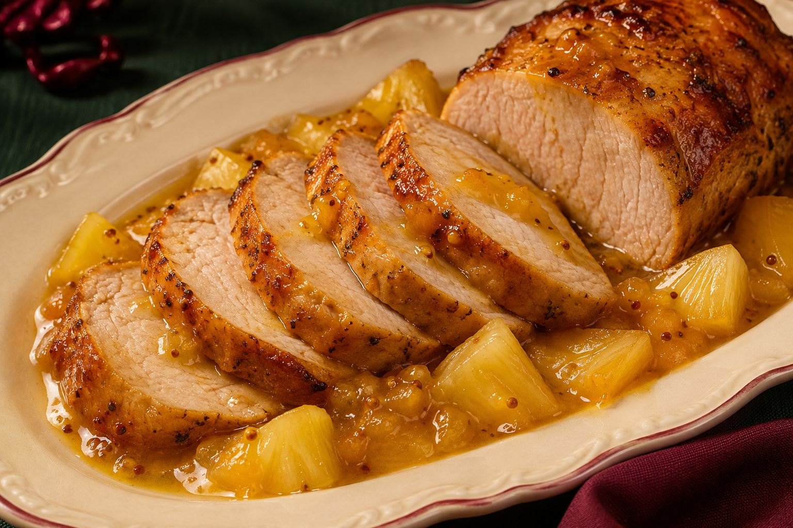
Prato principal
Lombo fatiado com molho agridoce de abacaxi e mostarda.
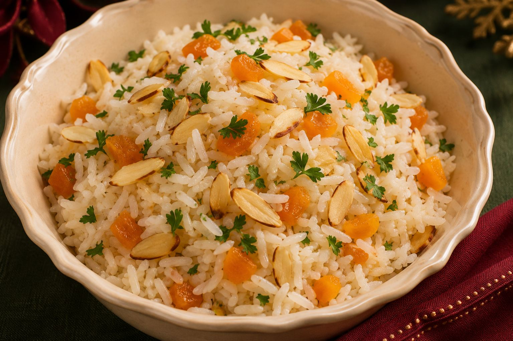
Acompanhamento
Arroz soltinho com damasco, amêndoas tostadas e salsinha.
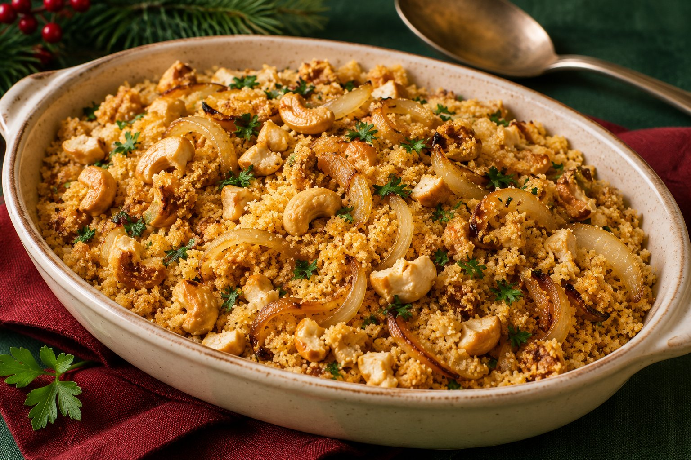
Acompanhamento
Farofa crocante com cebola dourada e castanha-de-caju.
Ver receita grátis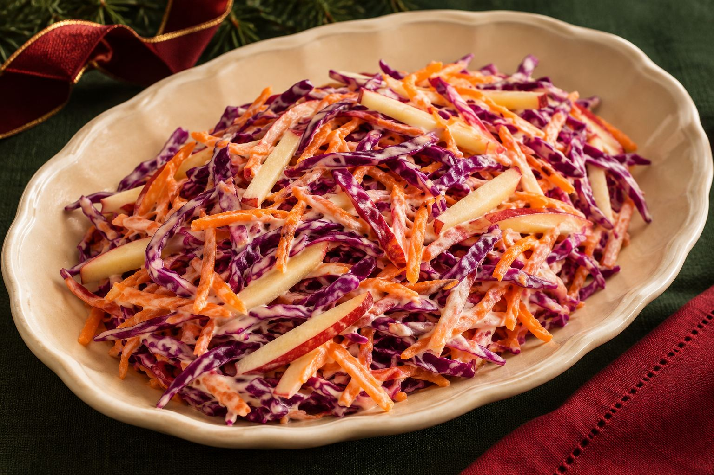
Acompanhamento
Maçã, repolho roxo e cenoura com molho de iogurte e limão.
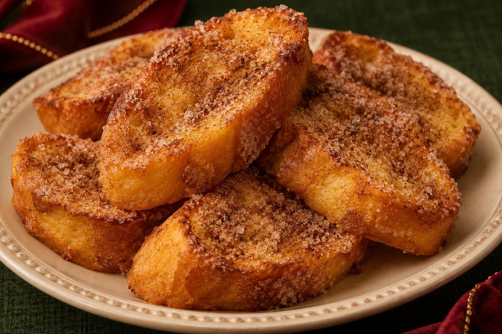
Sobremesa
Fatias douradas, macias por dentro, com açúcar e canela.
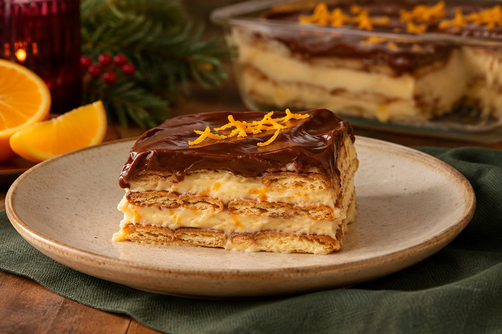
Sobremesa
Camadas de biscoito e creme de laranja com cobertura de chocolate.
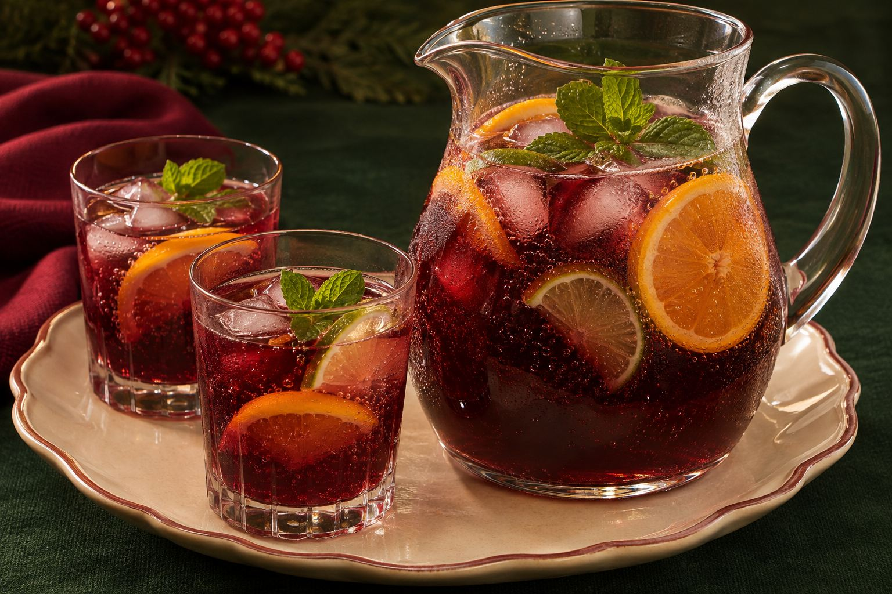
Bebida
Uma bebida sem álcool com uva, laranja, limão e hortelã.
2 bônus para imprimir
Os dois kits em PDF acompanham o e-book na mesma compra.


Três folhas A4 para montar seu cardápio, planejar as porções, organizar as compras e dividir as tarefas até a hora de servir.
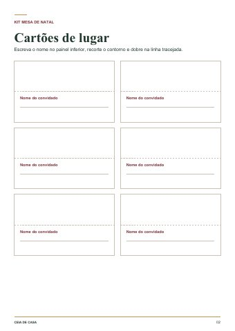
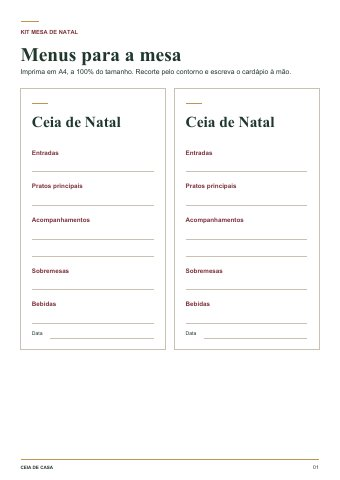
Menus, cartões de lugar e identificadores de pratos para imprimir em A4, preencher e usar na mesa.
Receita grátis
Um acompanhamento crocante de frigideira para servir com os assados.
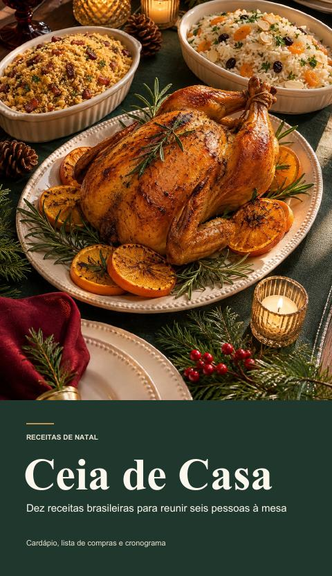
E-book + 2 bônus
Os dois bônus estão incluídos no preço do e-book.
Pagamento único na Flowyn. Acesso digital após a confirmação.